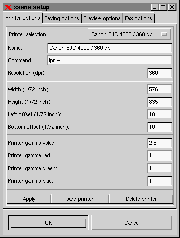
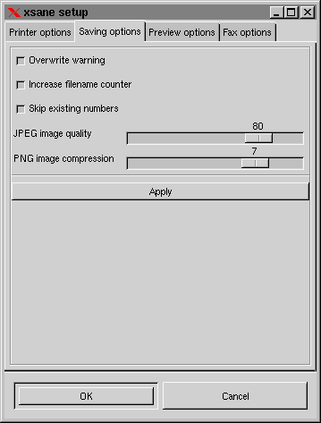
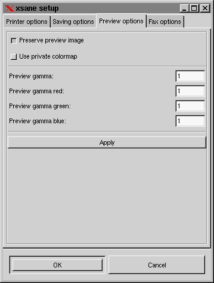
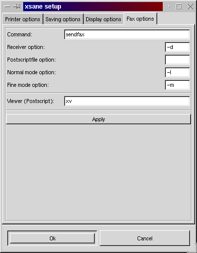

Setup
In the setup window the options for printer, saving, preview and fax are
set. The setup window is opened via the menu Preferences/setup.
Printer options:

COMMAND:
Enter the command with which you print files. The command has
to read the file from the standard input. If you use the bsd printing system,
this is "lpr -", if you use the old printing system, this should be "lp
-".
RESOLUTION:
With resolution you specify the resolution that shall
be used for printing. It is not always necessary to set this value to the
resolution of the printer. Especally in grayscale and color mode it normally
is good to set this value to the half or the quarter of the printer resolution
because the printer needs a greater resolution to do the dithering. This
value does not effect a change of the image size, the image size only depends
on the given zoom factor.
PRINT AREA (WIDTH, HEIGHT, LEFT OFFSET, BOTTOM OFFSET):
Each printer has it's own area size and position where it is
able to print.
PRINTER GAMMA VALUES:
Addidtional gamma value for printing. The Printer gamma
value is used for grayscale and as common value for color mode. The
red, green and blue values are for color correction.
Saving options:

OVERWRITE WARNING:
If enabled, a warning comes up before an existing file is overwritten.
INCREASE FILENAME COUNTER:
If enabled, the number in the filename of the following form
is automatically increased after a scan is completed:
image-001.ext
The number of digits is free and will not be changed, in case of an overflow,
a warning is printed and the counter becomes 0.
If an automatic document feeder is used the filename should
contain a counter and this option should be enabled.
SKIP EXISTING NUMBERS:
If increase filename counter is enabled, filenames that
already exist are skipped!
JPEG IMAGE QUALITY:
If the image is saved in jpeg format this value defines
the quality of the image. Low values mean low quality and low file size,
high values mean high quality and high file size.
PNG IMAGE COMPRESSION:
If the image is saved in png format this value defines
the compression level. The quality of the image keeps the same, low values
mean low compression, large files and low compression time. High values
mean high compression, smaller files and high compression time.
Preview options:

PRESERVE PREVIEW IMAGE:
Preserve the preview image for the next program start. The
last preview image is displayed on the next program start, you don`t need
to redo the preview scan.
USE PRIVATE COLORMAP:
If enabled and if the X server runs in 8 bit mode (256 colors)
then the preview uses an own color map.
PREVIEW GAMMA:
Set the gamma correction value for the preview image. This
is to get correct colors on your monitor.
Fax options:

COMMAND:
Enter command to send postscript fax files.
INDEX